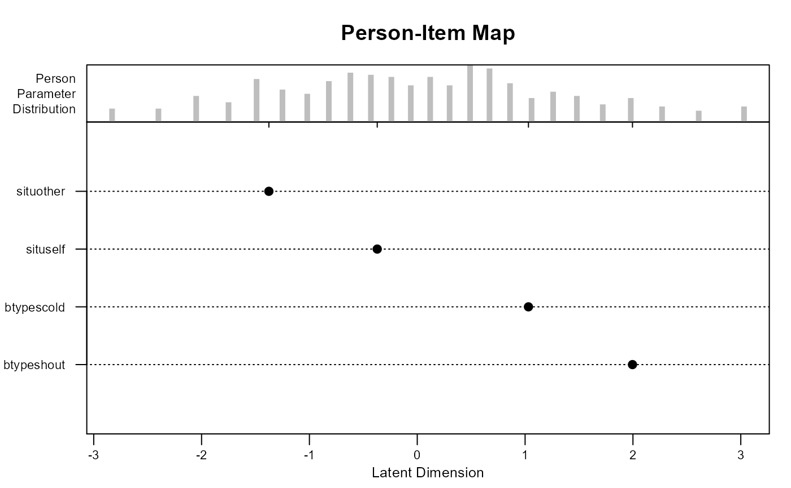

This function creates a person-item map for an object returned from the eirm function.
The function was modified from plotPImap in package eRm.
# S3 method for eirm plot( x, difficulty = FALSE, sorted = TRUE, theta = NULL, main = "Person-Item Map", latdim = "Latent Dimension", pplabel = "Person\nParameter\nDistribution", cex.gen = 0.7, ... )
| x | An object returned from the |
|---|---|
| difficulty | Whether difficulty should be used instead of easiness (default: FALSE). |
| sorted | Whether the parameters should be sorted in the plot (default: TRUE). |
| theta | A vector of estimated theta values. If NULL, then theta values are obtained from the estimated eirm model. It might be better to save the theta values from a baseline model (e.g., Rasch) and use them when creating a person-item map. |
| main | Main title for the person-item map. |
| latdim | Label of the x-axis, i.e., the latent dimension. |
| pplabel | Title for the upper panel displaying the person parameter distribution. |
| cex.gen | A numerical value giving the amount by which plotting text and symbols should be magnified relative to the default. Here cex.gen applies to all text labels. The default is 0.7. |
| ... | Other plot-related arguments. |
A person-item map.
data("VerbAgg") mod0 <- eirm(formula = "r2 ~ -1 + situ + btype + (1|id)", data = VerbAgg) plot(mod0)